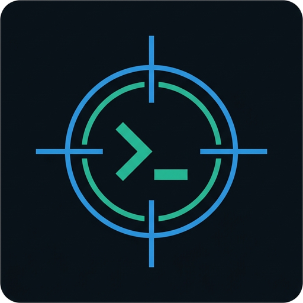
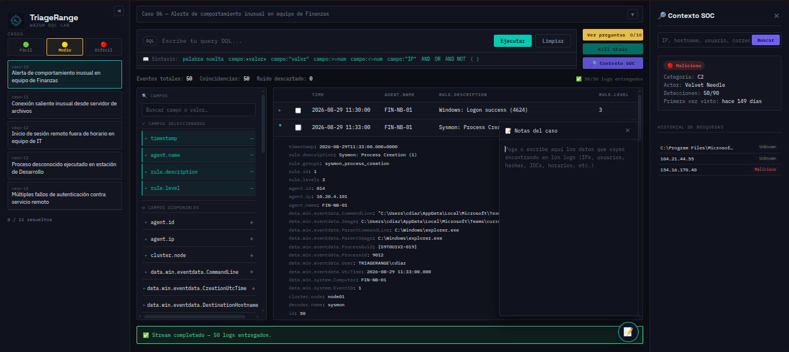
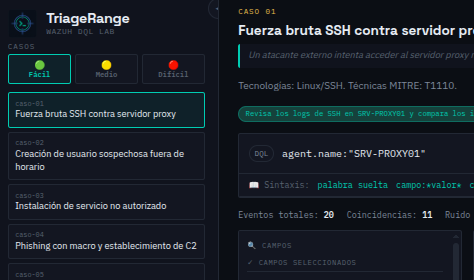
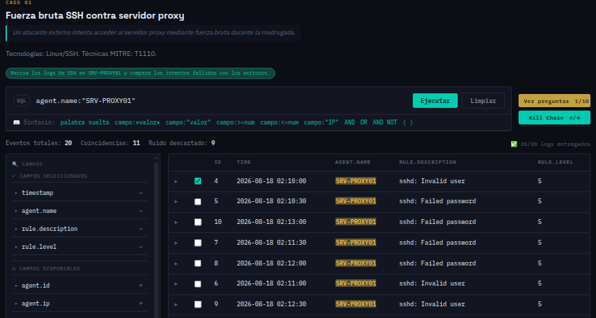
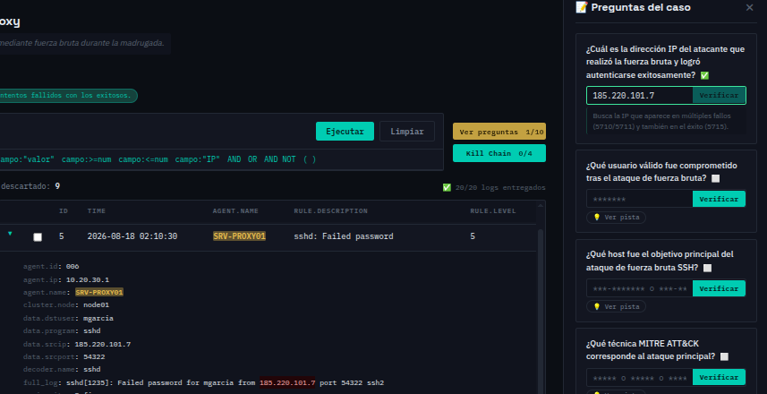
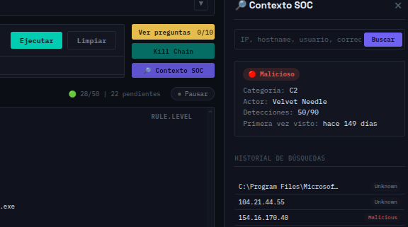
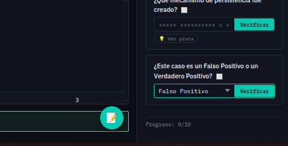

>_ consola de práctica de triage estilo SOC
Herramienta interactiva para entrenar filtrado de logs. Casos con dificultad progresiva, panel de campos dinámico y preguntas de verificación para practicar investigación de alertas en un entorno controlado.

// vista del panel de casos con filtrado de logs y verificación de respuestas
De la selección del caso a la respuesta verificada, paso a paso.
Seleccioná dificultad y un escenario con contexto real: técnica MITRE, tecnologías y el objetivo de la investigación.

Usá sintaxis DQL auténtica de Wazuh o el panel de campos con acordeón para armar la query con clicks.

Cada pregunta se responde con datos que encontraste. Si te trabás, hay pistas ocultas por defecto.

Ningún analista decide en el vacío. Antes de escalar o descartar una alerta, se cruza con lo que ya se sabe del entorno mediante el panel de Contexto SOC.
Buscador manual o clic directo sobre cualquier valor de un log (click to pivot).

La mayor parte del trabajo no es cazar APTs — es descartar bien lo que parece grave y no lo es. A partir de dificultad Media, los casos requieren determinar un veredicto basado en evidencia.

Elegí un caso, filtrá los logs, reconstruí lo que pasó.